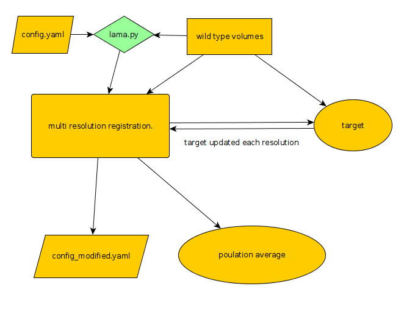

|
Created Friday 22 January 2016
Overview
A population average is generated by chosing a target from within your volumes. This should be copied to a folder called target with the project directory
Typically, there will be several stages of registration.
Rigid
This stage aligns images performing only linear translations
Affine
This stage takes into account the size of the inputs and also
deformable/non-linear
This stage aligns images taking into account local differences
The step is split into several satges where each stage the grid sapcing is reduced in order to firstly align larger structures, until finally aligning the samllest structures possible.
At each of these stages the target is regenerated by creating a mean intensity image of the output images from the previous stage.

Instructions
Run lama.py
config.yaml contains all the information needed for the registration process to work.
Example config files can be found in lama/example_configs
See this section about config files
To make a population average, the target image needs to be updated for the previous registration stage. This is specified in the config with
1 generate_new_target_each_stage: true
The population averages will be output into output/averages
An average will be created for each registration stage.
The one you will probably be interested in the one created from the final stage. For example deformable_to_8.nrrd
|